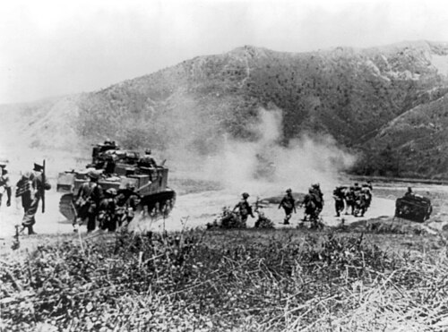
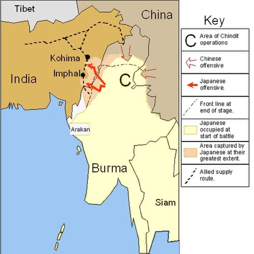
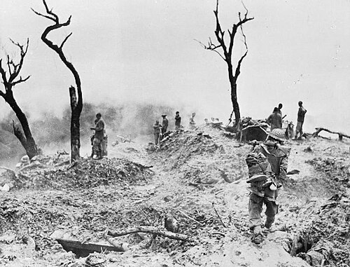
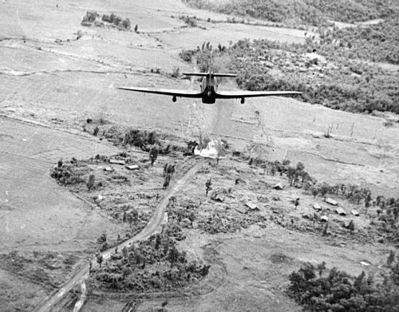

Date
March – July 1944
Location
Northeast India (Imphal and Kohima)
Result
Decisive British/Indian Victory
Overview
These battles halted the Japanese U-Go offensive into India and marked a turning point in the Burma campaign.
| Faction | Commanders | Casualties |
|---|---|---|
| British Empire | William Slim | ~12,600 casualties |
| Japan | Renya Mutaguchi | ~53,000 casualties (many from starvation) |


The Conflict
Kohima saw brutal close-quarter fighting (often at distances as short as a tennis court) over ridgelines and supply points. Japanese logistics collapsed, and the defenders' relief and resupply enabled a steady counteroffensive.
The defence of Imphal and Kohima exhausted Japanese offensive capabilities in the region; jungle warfare, monsoon rains, and extended supply lines proved catastrophic for the invaders.


Significance & Aftermath
- Stopped Japanese advance into India and boosted Allied morale.
- Marked the effective end of Japanese offensive power in Burma.